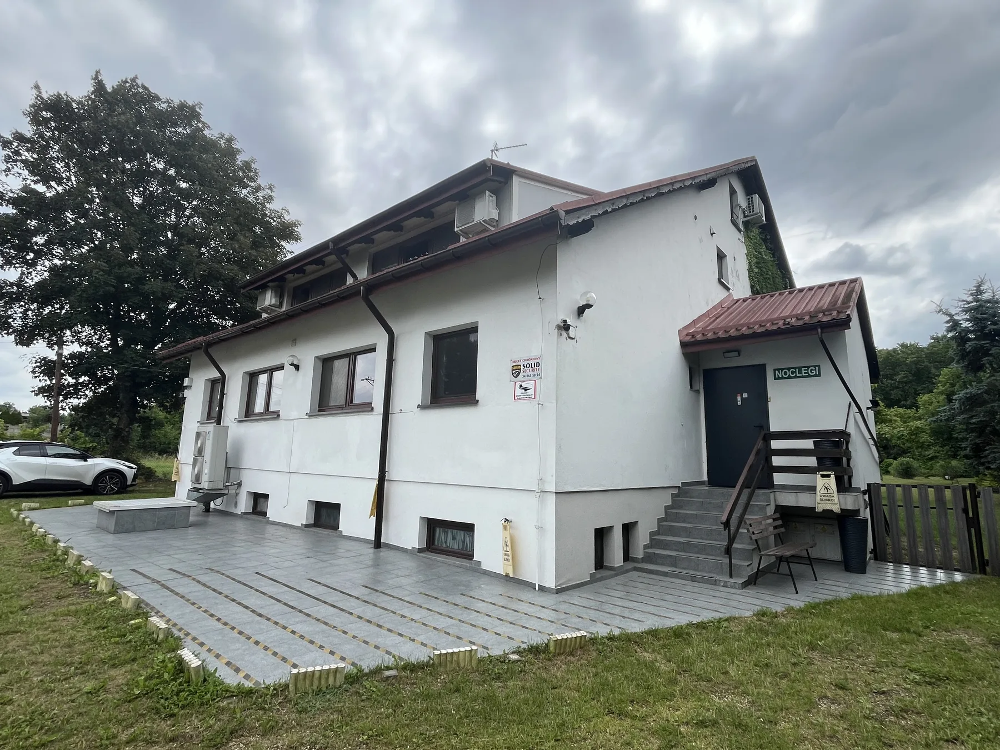

Zakwaterowanie pracowników – najważniejsze informacje
Szukasz zakwaterowania dla pracowników w okolicach Kłobucka lub Częstochowy? Pokoje Gościnne w Kamyku to kameralny obiekt z 7 pokojami i 19 miejscami noclegowymi. Każdy pokój ma własną łazienkę i klimatyzację, a goście mogą korzystać z Wi-Fi i parkingu, również dla busów. Warunki pobytu oraz cenę dla firmy ustalamy indywidualnie.

Warunki pobytu
Do dyspozycji gości jest 7 pokoi i łącznie 19 miejsc noclegowych. Każdy pokój ma własną łazienkę i klimatyzację. Na terenie obiektu dostępne są Wi-Fi oraz parking, również dla busów. Obiekt nie zapewnia wyżywienia, dlatego warto uwzględnić to przy planowaniu pobytu.
- 7 pokoi i 19 miejsc noclegowych;
- prywatna łazienka i klimatyzacja w każdym pokoju;
- Wi-Fi dla gości;
- parking, również dla busów;
- możliwość zapytania o krótki pobyt lub zakwaterowanie grupy;
- cena ustalana indywidualnie w zależności od terminu, liczby osób i długości pobytu;
- możliwość zapytania o fakturę lub rachunek — do potwierdzenia przed rezerwacją.
Jak zapytać o wolny termin?
Zadzwoń pod numer 601 461 707. Przygotuj datę przyjazdu, przewidywaną datę wyjazdu, liczbę osób i liczbę potrzebnych pokoi. W przypadku rezerwacji firmowej podaj również nazwę firmy i liczbę potrzebnych pokoi. Jeśli potrzebujesz faktury lub rachunku, zaznacz to podczas rozmowy — możliwość wystawienia dokumentu wymaga potwierdzenia. Cena i dostępność są ustalane indywidualnie.
Gdzie znajdują się pokoje?
Adres obiektu: ul. Stefana Żeromskiego 87, 42-125 Kamyk. Lokalizacja pozwala zaplanować pobyt w okolicach Kłobucka i Częstochowy. Przed podróżą sprawdź trasę w nawigacji i skontaktuj się z obiektem, jeśli potrzebujesz wskazówek dojazdu.
Zapytaj o nocleg
Najprościej ustalisz dostępność i warunki pobytu telefonicznie.
Zadzwoń: 601 461 707 ↗